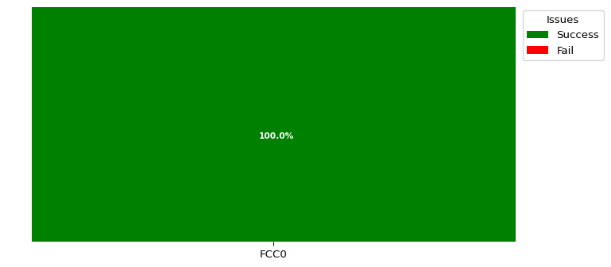

Test Setup Information
| Device under test |
| DUT Name | Test_AP | | SSID | MFG-5GTEST | | Test Duration | 0:00:59 |
|
Objective
Detection Probability Test is compilance to the Dynamic Frequency Selection (DFS) Regulation, it creates regulatory specified radar pulses to the DUT repeatedly to measure the probability of detection.
Result Summary
The below graph provides information regarding detection probability percentage for various RADAR Types.

Summary Table
The below table provides detailed information regarding detection probability percentage for various RADAR Types.
| WaveForm Name |
Pd % |
Desired Percentage % |
Pd Required Percentage % |
Num Trials |
Average Detect Time (secs) |
Result |
| FCC0 |
100.0 |
80 |
60% |
1 |
4.0 |
PASSED |
Detailed Result Table
The below tables provides detailed information for per trials run for each RADAR Types
Detailed Result Table for FCC0
The below table provides detailed information for per trials run for FCC0RADAR Type
| Trials |
Num Bursts |
Num Pulses |
Pulse Width (us) |
PRI(us) |
Detected |
Frequency (KHz) |
Detection Time(secs) |
| Trial_1 |
1 |
18 |
1 |
1428 |
YES |
5500000 |
4 |
Test basic Information
| Information |
| Parameters | Values | | LANforge ip | 192.168.100.221 | | LANforge port | 8080 | | Radar Types | ['FCC0'] | | Radar Hardware | ct712 | | Freq Channel Number | 100 | | Tx Power of radar in dbm | -38.61 | | Desired Pass Percentage | 80% | | Max Number of extra trials | 0 | | Time interval between Trials (secs) | 0 | | Run Traffic | False | | Frequency step option | Stay at centre freq for all Trials | | Contact | support@candelatech.com |
|